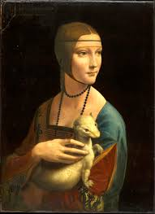
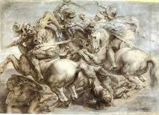

LEONARDO DA VINCI
Biografia
Leonardo da Vinci, 15 de abril de 14522-Amboise, 2 de mayo de 1519) fue un polímata florentino del Renacimiento
italiano. Fue a la vez pintor, anatomista, arquitecto, paleontólogo,3 artista, botánico, científico, escritor, escultor,
filósofo, ingeniero, inventor, músico, poeta y urbanista. Murió acompañado de Francesco Melzi,4 a quien legó sus proyectos,
diseños y pinturas.2 Tras pasar su infancia en su ciudad natal, Leonardo estudió con el pintor florentino Andrea de
Verrocchio. Sus primeros trabajos de importancia fueron creados en Milán al servicio del duque Ludovico Sforza.
Trabajó a continuación en Roma, Bolonia y Venecia, y pasó sus últimos años en Francia, por invitación del rey Francisco I.
Frecuentemente descrito como un arquetipo y símbolo del hombre del Renacimiento, genio universal, además de filósofo
humanista cuya curiosidad infinita solo puede ser equiparable a su capacidad inventiva,5 Leonardo da Vinci es considerado
uno de los más grandes pintores de todos los tiempos y, probablemente, la persona con el mayor número de talentos en
múltiples disciplinas que jamás ha existido.6 Como ingeniero e inventor, Leonardo desarrolló ideas muy adelantadas a su
tiempo, tales como el helicóptero, el carro de combate, el submarino y el automóvil. Muy pocos de sus proyectos llegaron
a construirse (entre ellos la máquina para medir el límite elástico de un cable),Nota 2 puesto que la mayoría no eran
realizables durante esa época.Nota 3 Como científico, Leonardo da Vinci hizo progresar mucho el conocimiento en las áreas
de anatomía, la ingeniería civil, la óptica y la hidrodinámica. Su asociación histórica más famosa es la pintura.
Dos de sus obras más conocidas, La Gioconda y La Última Cena, han sido copiadas y parodiadas en varias ocasiones, al
igual que su dibujo del Hombre de Vitruvio. No obstante, únicamente se conocen alrededor de 20 obras suyas, debido
principalmente a sus reiterados (y a veces desastrosos) experimentos con nuevas técnicas y a su inconstancia crónica.
Este reducido número de creaciones, junto con sus cuadernos con dibujos, diagramas científicos y reflexiones sobre la
naturaleza de la pintura, constituyen un legado para las sucesivas generaciones de artistas.
Algunos de sus cuadros
 |
 |
 |
|  |
 |
KAREN NATALIA VILLANUEVA SALINAS |
|